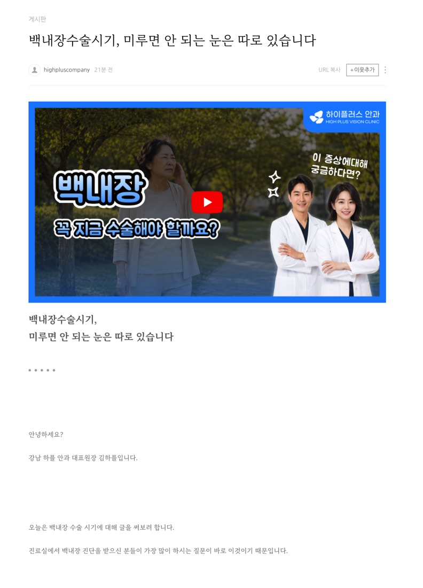

우리병원을 처음 찾는 환자, 즉 초진의 유입 경로부터 정리했습니다. 지금 그 경로가 몇 개나 열려 있는지 보시면, 무엇을 채워야 할지 분명해집니다.
엘리트안과는 신촌에서 드림렌즈(소아 근시 관리), 백내장, 안구건조증, 익상편, 망막질환에 더해 오타모반, 각막문신 같은 특수 진료까지 폭넓게 보고 계십니다. 원장님별로 전문 분야가 뚜렷하게 나뉘어 있어, 콘텐츠로 풀어낼 주제는 이미 충분합니다.
지금 초진이 들어오는 경로
네이버 플레이스강함리뷰가 1,000건이 넘습니다. 신촌 지역 안과 중에서도 드문 규모로, 네이버 안에서는 이미 압도적인 신뢰를 쌓아두셨습니다.
네이버 블로그개인 일지블로그가 있지만 원장님 개인 후기와 학회 참석기 위주입니다. 오타모반, 각막문신처럼 특수한 진료를 설명하는 정보성 글은 아직 없고, 발행 간격도 몇 달씩 비어 있습니다.
구글미확인구글 지도 등록과 게시물 활동이 확인되지 않습니다. 구글과 AI 검색으로 이어질 경로가 비어 있습니다.
유튜브미확인원장님을 직접 보여주며 신뢰를 쌓을 영상 채널이 확인되지 않습니다.
자체 홈페이지없음병원 이름으로 된 홈페이지가 없습니다. 네이버 플레이스에도 홈페이지 링크가 비어 있는 상태입니다.
네이버 플레이스 안에서의 신뢰는 이미 최상급입니다. 문제는 이 신뢰가 네이버 밖으로 한 걸음도 나가지 못하고 있다는 점입니다. 구글과 AI 검색에게 엘리트안과는 사실상 존재하지 않는 병원입니다.
02
점검해본 채널들
지금은
네이버 안에서만 신뢰가 쌓여 있습니다
리뷰 1,000건이 넘고 여러 전문의가 함께 진료하는 규모까지 갖췄지만, 이 정보가 네이버 플레이스 화면 밖으로는 나가지 않습니다. 검색 엔진이 바뀌는 순간 병원 존재 자체가 확인되지 않습니다.
→
제안
이 신뢰를 구글과 자체 홈페이지로도 옮겨 심으면 어떨까요
네이버에 쌓인 리뷰와 진료 정보를 근거로, 구글 지도 등록과 홈페이지 콘텐츠를 함께 채워 같은 신뢰가 다른 검색 엔진에서도 보이도록 만듭니다.
지금은
블로그가 있지만 정보성 콘텐츠는 아닙니다
블로그가 운영되고는 있지만 원장님 개인 일지와 학회 후기가 중심입니다. 드림렌즈, 오타모반, 각막문신처럼 이 병원만의 강점인 진료를 환자 눈높이에서 설명하는 글은 아직 없습니다.
→
제안
세부 진료과목별로 정보성 콘텐츠를 쌓아가면 어떨까요
드림렌즈, 백내장, 익상편, 오타모반, 각막문신처럼 원장님별 전문 분야를 나눠 환자가 실제로 검색할 만한 주제로 순서대로 발행합니다. 의료인 감수를 거쳐 발행하고 담당 에디터를 고정합니다.
지금은
구글과 유튜브는 아직 손대지 않으셨습니다
네이버는 검색어에 따라 노출 편차가 있습니다. 구글 쪽은 활동이 확인되지 않아서 이 편차를 메울 다른 경로도 없는 상태입니다.
→
제안
구글 지도 등록과 AI 유튜브로 시작해보면 어떨까요
구글 지도에 병원을 등록하고 꾸준히 게시물을 올려 구글 검색에서 자리를 잡습니다. 촬영 없이 AI로 만든 영상을 블로그, 구글 콘텐츠와 연계합니다.
지금은
병원 이름으로 된 홈페이지가 없습니다
홈페이지가 없으면 구글과 AI가 참고할 자료 자체가 없습니다. 네이버 안에서 아무리 신뢰를 쌓아도, 구글 검색이나 챗GPT, 제미나이 같은 AI 검색에서는 엘리트안과라는 이름이 나오지 않습니다. 오타모반이나 각막문신처럼 다루는 곳이 많지 않은 진료일수록 이 공백이 더 크게 작용합니다.
→
제안
워드프레스로 병원 도메인을 만들어야 합니다
임대형 소개 홈페이지가 아니라 워드프레스로 만들어야, 병원 도메인 안에 진료과목별 페이지와 원장님별 전문 페이지, 칼럼을 구조화된 형태로 계속 쌓을 수 있습니다. 이 구조가 그대로 구글과 AI가 인용하는 출처가 됩니다.
03
왜 지금 워드프레스가 필수인가
예전에는 홈페이지가 없어도 크게 문제가 되지 않았습니다. 네이버 플레이스와 블로그만으로 충분히 환자가 찾아왔기 때문입니다. 엘리트안과도 그렇게 신촌에서 가장 신뢰받는 안과 중 하나가 되셨습니다. 하지만 지금은 검색의 축 자체가 바뀌고 있습니다.
01
구글과 AI가 답을 만드는 방식이 바뀌었습니다
챗GPT나 제미나이 같은 AI는 주로 구글에 쌓인 정보를 근거로 답합니다. 네이버 블로그와 플레이스는 국내 포털 안에서는 강하지만, 구글과 AI 입장에서는 근거로 삼을 자료가 거의 없는 셈입니다.
02
네이버 플레이스만으로는 구글과 AI의 출처가 되지 못합니다
플레이스는 네이버가 소유한 화면이라 병원이 직접 구조를 바꿀 수 없습니다. 반면 워드프레스로 만든 홈페이지는 병원 도메인 안에 있어서, 진료과목과 위치, 진료시간 같은 정보를 구글이 읽는 구조화 데이터(스키마)로 직접 심을 수 있습니다.
03
오타모반, 각막문신처럼 특수한 진료일수록 이 공백이 더 크게 작용합니다
이런 진료는 애초에 다루는 병원이 많지 않아서, 환자가 검색했을 때 후보에 오르는 병원 수 자체가 적습니다. 구글에 이 진료를 설명하는 페이지가 있는 병원과 없는 병원의 차이가 그대로 문의로 이어집니다. 지금 엘리트안과는 이 진료들을 실제로 하고 계시는데도, 구글에서는 검색되지 않는 상태입니다.
04
그래서 이제 홈페이지는 소개용이 아니라 워드프레스로 갑니다
지금까지는 홈페이지가 있으면 좋고 없어도 그만인 항목이었습니다. 지금부터는 다릅니다. 블로그와 플레이스로 네이버 안의 신뢰를 쌓는 것과 별개로, 워드프레스 홈페이지로 구글과 AI가 인용할 자산을 만드는 작업을 기본 구성에 포함해 진행합니다.
엘리트안과는 네이버 안에서는 이미 증명된 병원입니다. 워드프레스 홈페이지는 그 증명을 구글과 AI 검색으로 그대로 옮기는 작업입니다.
04
저희가 집행하는 항목
하이플러스컴퍼니는 의료인이 운영하는 회사로서, 어떠한 글이 나가더라도 신뢰와 정확도에 가장 많은 의미를 두고 있습니다.
상위노출만 보장하는 글로 단순 노출만 노리는 것이 아니라, 신뢰성 있고 정확도 높은 글로 병원의 초진으로 이끌어 올 수 있는 글을 발행하는 것이 목표입니다.
기획, 카피, 디자인, 개발까지 진행합니다. 진료과목별 페이지와 원장님별 전문 페이지를 구조화해서 만듭니다.
구글 서치콘솔, 구글 애널리틱스 연동과 sitemap.xml, robots.txt 제출
병원명, 진료과목, 위치, 진료시간을 구글이 읽는 구조화 데이터(스키마)로 심는 작업
드림렌즈, 오타모반, 각막문신 등 진료 항목별 페이지와 홈페이지 내 칼럼을 만들어 콘텐츠를 계속 쌓는 구조
구글 마케팅, 유튜브 콘텐츠와 서로 연결해 AI 검색이 인용하는 출처로 활용
모바일 대응, 페이지 속도 개선, 상담 문의 폼 설정
서버, 도메인, 보안 관리
구축 이후에도 플러그인 충돌과 오류 대응까지 저희가 맡습니다.
홈페이지 없이는 구글과 AI 검색을 잡을 방법이 없습니다. 그래서 워드프레스 홈페이지는 아래 채널 조합과 상관없이 모든 구성에 기본으로 포함해 안내드립니다.
2블로그직접 실행
네이버 블로그 관리
의료법을 준수한 원고와 네이버 SEO 최적화 포스팅입니다. 발행 주기 기준으로 운영하고 전담 에디터가 배정됩니다.
네이버 서브 블로그 운영
서브 블로그를 추가로 육성합니다.
3플레이스직접 실행
네이버 플레이스 관리
이미 확보된 리뷰와 사진 자산이 꾸준히 쌓이도록 관리하고, 검색 순위 변화는 리포트로 드립니다.
4구글 마케팅직접 실행
구글 마케팅
구글 지도에 병원을 등록하고, 꾸준한 게시물로 구글 검색 노출을 만듭니다. 발행 주기는 병원 상황에 맞춰 정합니다.
네이버 노출은 고정된 값이 아닙니다. 검색어마다 순위가 다르고, 경쟁 병원이 리뷰와 사진을 채우면 밀리기도 합니다. 구글을 잡아두면 네이버와 상관없는 유입이 하나 더 생깁니다.
5유튜브직접 실행
병원 유튜브 AI
AI로 영상을 만들어 촬영 없이 채널을 운영합니다. 블로그, 구글, 워드프레스 콘텐츠와 연계됩니다.
네이버 블로그, 유튜브 콘텐츠 연계
발행된 블로그 글을 바탕으로 50초 내외 원장님 AI 영상을 만들어 블로그와 유튜브에 함께 올립니다.
유튜브 썸네일 예시
썸네일에 들어가는 병원명, 로고, 색상은 엘리트안과에 맞춰 제작합니다.
블로그 원고 예시

구글과 워드프레스에 쌓인 콘텐츠를 영상 소재로 전환하면, 같은 주제가 텍스트와 영상 두 형태로 동시에 노출됩니다. 유튜브는 AI 검색이 인용하는 비중이 높아, 다른 채널과 맞물릴 때 검색 노출이 서로를 끌어올리는 구조가 만들어집니다.
6인스타그램직접 실행
인스타그램 관리
피드 톤앤매너(인스타그램 계정의 색감, 분위기, 시각적 규칙 등)를 설계하고 카드뉴스와 해시태그를 관리합니다. 앞 단계에서 만든 블로그 원고와 유튜브 영상을 카드뉴스로 다시 쓰기 때문에, 원고를 새로 쓰지 않고도 채널이 하나 더 늘어납니다.
인스타그램은 검색으로 병원을 찾는 경로는 아닙니다. 다른 플랫폼에서 병원을 접한 환자가 크로스체크를 하려 들어오는 곳입니다. 앞의 다른 채널에서 이미 만든 콘텐츠를 옮겨 담는 방식이라 부담 없이 함께 운영합니다. 릴스와 숏폼 제작은 포함되지 않습니다. 네이버, 플레이스, 구글, 워드프레스, 인스타그램 등 (환자는 신뢰도를 올리기 위해 다른 플랫폼에서 확인을 합니다)
디자인직접 실행
블로그 디자인
스킨, 타이틀, 위젯을 병원 아이덴티티에 맞게 정리합니다.
랜딩페이지 제작
이벤트나 시술 하나를 전환에 최적화한 1페이지로 만듭니다.
이벤트 디자인
휴무 안내, 팝업, 카드뉴스, 썸네일을 제작합니다.
일회성 추가항목
지역 카페 바이럴 건별
맘카페와 지역 커뮤니티에 정보성 게시물을 올리고 자연스러운 반응을 유도합니다.
언론보도 건별
보도자료를 작성해 주요 매체에 배포합니다. 병원 신뢰도를 높이고 AI 검색이 인용하는 출처로도 쓰입니다.
지식인 건별
질문과 답변 형식으로 병원 정보를 올립니다.
리뷰, 민원 대응 상시
플레이스와 리뷰에 올라오는 민원 대응을 함께 처리합니다.
05
초진이 엘리트안과를 선택하도록
같은 안과 환자라도 검색하는 방식과 병원을 고르는 기준이 다릅니다. 엘리트안과의 강점이 통하는 세 부류를 정하고, 각각에 맞는 콘텐츠로 닿습니다.
A
안과는 가기로 했고 어디로 갈지 고르는 사람
전환 임박
신촌 지역에서 규모 있고 후기 많은 안과를 찾는 단계입니다. 이미 리뷰 1,000건이 넘고 여러 전문의가 있다는 사실 자체가 이 층에게는 가장 강한 선택 이유입니다.
검색어 (예시)
신촌안과신촌역 안과서대문구 안과 추천
병원을 고르는 기준
규모가 크고 전문의가 여러 명인지, 후기가 많은지
붙이는 콘텐츠
원장님별 전문 분야 소개, 병원 규모와 진료 시스템 소개
B
진단은 받았는데 시기를 미루는 사람
결정까지 시간이 걸리는 층
백내장이나 노안이라는 말은 들었지만 아직 견딜 만하다고 생각합니다. 검색 기간이 길고 그 사이 여러 병원 글을 읽습니다.
검색어 (예시)
백내장 초기 증상백내장 수술 시기노안 진행 속도
병원을 고르는 기준
미루면 어떻게 되는지 솔직하게 말해주는가
붙이는 콘텐츠
백내장 진행 단계와 관리법, 수술 시기를 정하는 기준
C
오타모반, 각막문신처럼 어디로 가야 할지부터 모르는 사람
최우선 타겟
이런 진료를 다루는 병원 자체가 많지 않아서, 검색만 걸리면 경쟁 없이 바로 문의로 이어집니다. 지금 엘리트안과는 이 진료를 실제로 하고 계시는데도 구글에서 검색되지 않는 상태입니다.
검색어 (예시)
오타모반 레이저눈 흰자 문신각막문신술
병원을 고르는 기준
이 진료를 다루는 병원이 있는지부터 찾는다
붙이는 콘텐츠
오타모반과 각막문신이 무엇인지, 시술 전후 안내
최근 들어 AI챗봇(챗GPT, GEMINI 등)에게 물어 병원을 찾는 환자가 늘고 있습니다. AI는 주로 구글에 쌓인 정보를 근거로 답하기 때문에, 답변에 나오는 병원과 나오지 않는 병원이 갈립니다.
AEO우리 글이 답변에 인용됨
오타모반 레이저 어디서 해요?
AI
오타모반은 색소를 제거하는 레이저 치료로 접근합니다. 진행 정도에 따라 치료 횟수가 달라지므로 안과나 피부과에서 정확한 진단을 받는 것이 좋습니다.
출처🔗 엘리트안과 홈페이지
GEO우리 병원이 추천됨
신촌 각막문신 잘하는 안과 추천해줘
AI
신촌 근처에서는 아래 병원을 살펴보실 만합니다.
엘리트안과각막문신 정보와 사례가 꾸준히 쌓여있는 병원입니다.
06
엘리트안과를 위해 제안합니다
먼저 원장님과 상의해 확대하고 싶은 진료와 오셨으면 하는 환자군을 정합니다. 그 내용을 기준으로 키워드를 설계하고 발행 주기를 잡습니다.
현재 주력 진료
드림렌즈, 백내장, 안구건조증, 익상편, 망막질환, 오타모반, 각막문신
확대하고 싶은 진료
[상담 후 확정]
오셨으면 하는 환자군
[상담 후 확정]
↓
키워드 도출 (예시)
신촌안과신촌역안과드림렌즈오타모반각막문신
주력 진료를 기준으로 예시로 넣어본 키워드입니다. 원장님이 밀고 싶으신 키워드를 알려주시면 그걸로 확정하겠습니다.
↓
주 2~4회 발행
엘리트안과를 위해 제안하는 구성입니다
올인원 추천블로그 + 구글 마케팅 + 워드프레스 홈페이지네이버 안에서만 머물던 신뢰를 구글과 자체 홈페이지로 확장하는 구성입니다. 이미 압도적인 플레이스 신뢰가 있는 만큼, 이 신뢰를 다른 채널로 옮기는 작업이 가장 먼저입니다.
그 외 선택 가능한 구성
검색 기본기블로그 + 플레이스+ 워드프레스 홈페이지
콘텐츠 확장블로그 + 유튜브+ 워드프레스 홈페이지
AI, 구글 강화블로그 + 유튜브 + 구글 마케팅+ 워드프레스 홈페이지
워드프레스 홈페이지는 채널 조합과 상관없이 모든 구성에 기본으로 포함됩니다. 홈페이지 없이는 구글과 AI 검색을 잡을 수 없기 때문입니다. 상세 구성과 발행 주기는 상담 후 병원 상황에 맞춰 조정합니다.
더 자세한 내용은 홈페이지에서 확인해 보실 수 있습니다
하이플러스컴퍼니가 병원 마케팅을 어떤 방식으로 운영하는지, 어떤 항목을 다루는지 정리해 두었습니다.